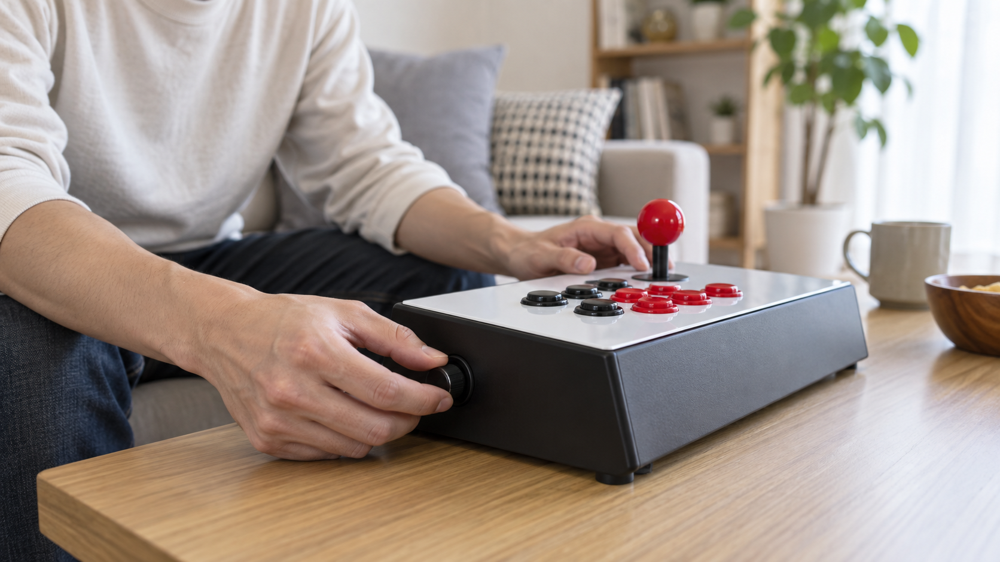
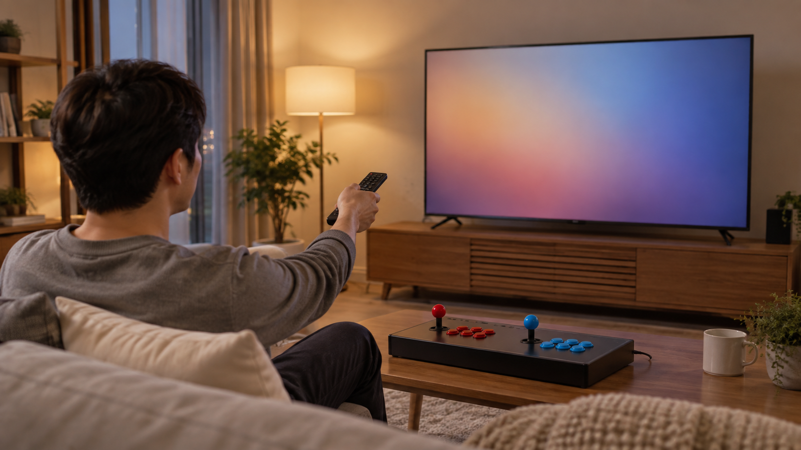

집에서 오락기 소리를 조절하려면 먼저 제품 자체의 음량 조절 위치와 TV 같은 연결 화면의 음량을 구분해야 합니다. 두 곳을 모두 낮게 시작한 뒤 한쪽씩 조금씩 올려, 자주 하는 게임과 집 안 환경에 맞는 크기를 찾으세요.

기기의 조절 위치부터 확인하세요
제품에 따라 음량 버튼이나 다이얼의 위치와 조절 방식은 다를 수 있으므로 판매 페이지와 사용 안내를 먼저 확인하세요. 조이스틱 주변, 기기 옆면이나 뒷면을 살피되 용도를 모르는 스위치는 임의로 조작하지 않는 편이 좋습니다. 위치가 보이지 않으면 제품명을 적어 판매자에게 문의하세요.
음량 조절 위치와 방식은 사용 중인 제품의 공식 안내를 기준으로 확인해야 합니다.

기기와 TV 음량을 나눠 맞추세요
노리박스 제품 목록에는 제품명에 TV연결형이라고 안내된 상품이 있어, 이런 구성은 기기뿐 아니라 연결한 TV의 음량도 함께 확인할 필요가 있습니다. 어느 쪽에서 소리가 나오는지 모호하면 기기와 TV의 음량을 번갈아 한 단계씩 바꿔 반응을 확인하세요. TV 연결 준비는 TV 연결형 오락기 설치 방법에서도 확인할 수 있습니다.
TV 연결형은 기기와 TV 가운데 어느 쪽 음량이 소리에 영향을 주는지 나눠 확인해야 합니다.
작은 소리부터 단계적으로 조절하세요
전원을 켜기 전에는 음량을 낮은 위치에 두고, 게임이 시작된 뒤 조금씩 올리는 편이 갑작스러운 큰 소리를 피하기 쉽습니다. 시작 화면과 실제 게임 장면의 소리가 다르게 느껴질 수 있으므로 자주 하는 게임에서 다시 확인하세요. 가족과 함께 쓴다면 시간대별로 편한 기준도 미리 정해 두세요.
처음에는 작은 소리로 시작하고 실제 게임 장면에서 한 단계씩 조절하는 편이 안전합니다.
- 기기 음량을 낮은 위치에서 시작하기
- TV나 연결 화면의 음량 따로 확인하기
- 자주 하는 게임 장면에서 다시 듣기
- 사용 시간대와 함께할 사람 고려하기
소리가 이상하면 조건을 기록하세요
소리가 나오지 않거나 끊기고 거칠게 들리면 무조건 스피커 문제로 단정하지 말고 제품명, 연결 방식, 게임명과 발생 장면을 기록하세요. 케이블을 임의로 바꾸거나 기기를 분해하기 전에는 해당 제품의 안내와 판매자 문의 경로를 확인하는 편이 좋습니다. 노리박스는 판매 뒤 생기는 사용 문의와 A/S, 부품 문제를 직접 다뤄온 경험을 제품 점검에 반영한다고 소개합니다.
제품명과 연결 방식, 게임명과 증상을 함께 기록하면 소리 문제를 설명하기 쉬워집니다.
현재 노리박스 오락실게임기와 관련 제품은 제품자세히보기에서 확인하세요.